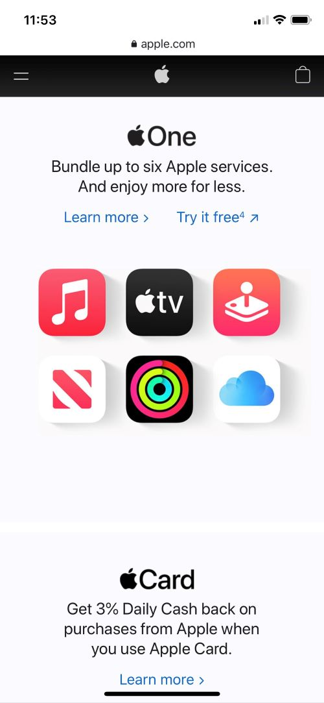
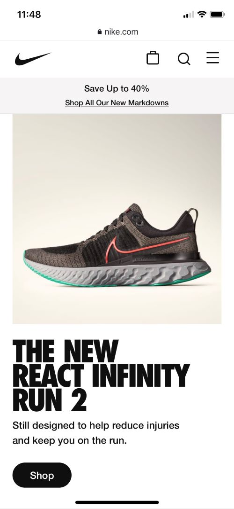

White Space and Clean Design
Apple
Apple may be the king of using white space and clean design; in fact, all of their designs rely heavily on these two principles. This screenshot of their mobile site is no exception. The site is free from clutter and the background color is plain white. The text is basic black except for links to additional information. There is plenty of white space on the page for the eye to rest. There is no confusion on what the reader is supposed to focus on.
Contrast
Nike
On the Nike mobile website we see a simple, clean design. The black, bold and capital font contrasts with the white background of the webpage. The same contrast is used in the photo of the shoe on display; a dark grey shoe with a light backdrop. The contrast makes the text easy to read and the shoe easy to look at. The design of the page encourages the reader to shop and purchase the item on display.
Repetition
Banana Republic
The Banana Republic mobile website is much more similar to what the reader would see if using a tablet or desktop computer. It is clear this website has not been as customized for the mobile viewing experience and some others. However, the same font type is used in nearly every section of text on the page, except the logo. The repetition helps the reader know they are on the same website and everything looks familiar. More important text is larger or bolder allowing the reader to follow the text from most important to least important.